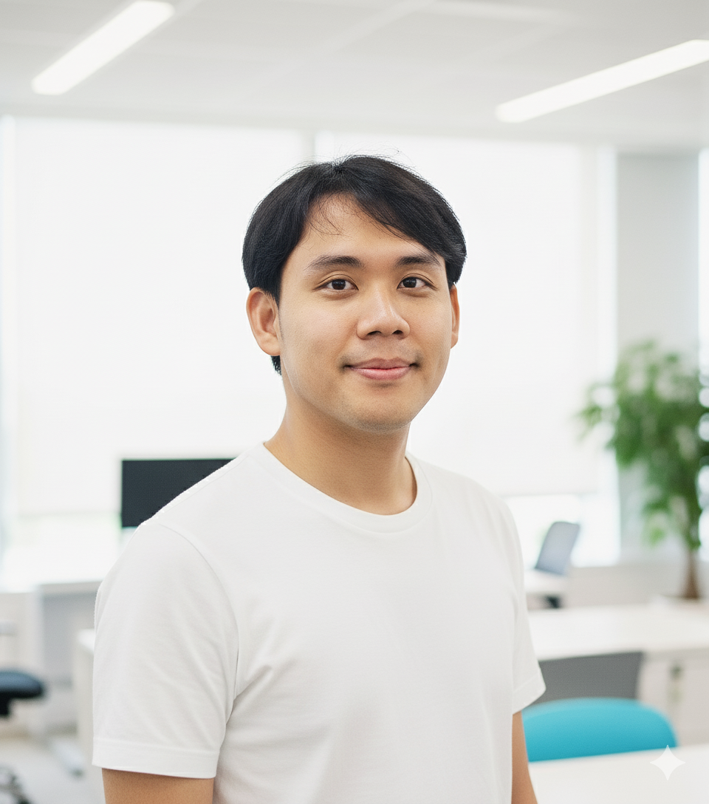

ดร.ธีรพงศ์ ปานบุญยืน ("ดร.เก้า") เป็นนักวิจัยด้านปัญญาประดิษฐ์ ผู้มุ่งพัฒนา Learning Representations เป็นรากฐานของ AI ยุคถัดไป ผ่านการผสาน Compositional World Models เพื่อสร้างระบบที่ Autonomy-Driven และ Interpretable ในระดับ Large-Scale เขาเป็นผู้ก่อตั้ง MARSAIL ห้องปฏิบัติการ AI ที่พัฒนา Intelligent Agents สำหรับระบบประกันภัยภายใต้แนวคิด AI for Social Good
ในด้านการศึกษา ดร.เก้า สำเร็จการศึกษาระดับปริญญาเอก สาขาวิศวกรรมคอมพิวเตอร์ จากจุฬาลงกรณ์มหาวิทยาลัย ภายในระยะเวลาเพียง 2 ปีครึ่ง ภายใต้ทุนดุษฎีบัณฑิต 100 ปีจุฬาลงกรณ์มหาวิทยาลัย และทุน 90 ปีจุฬาลงกรณ์มหาวิทยาลัย ก่อนหน้านี้ สำเร็จการศึกษาระดับปริญญาโทสาขาเดียวกันภายในเวลา 1 ปีครึ่ง ภายใต้ทุนระดับบัณฑิตศึกษา จุฬาฯ เพื่อเฉลิมฉลองวโรกาสที่พระบาทสมเด็จพระเจ้าอยู่หัวทรงเจริญพระชนมายุครบ 72 พรรษา โดยสำเร็จการศึกษาระดับปริญญาเอกในวัยเพียง 27 ปี สะท้อนถึงศักยภาพและความมุ่งมั่นในเส้นทางวิชาการ
นอกจากนี้ ดร.เก้ายังได้รับการสนับสนุนทุนระดับสูงสุดจากโครงการ The Second Century Fund (C2F) ใน Track A สำหรับนักวิจัยหลังปริญญาเอกศักยภาพสูง ของจุฬาลงกรณ์มหาวิทยาลัย เพื่อสนับสนุนการวิจัยที่มีอิทธิพลและสร้างผลกระทบต่อวงการเทคโนโลยี AI ในระดับโลก และเป็นหนึ่งในนักวิจัยไทยที่ได้รับพระมหากรุณาธิคุณรับพระราชทานทุน Global Young Scientists Summit (GYSS) ประจำปี 2025 จากสมเด็จพระกนิษฐาธิราชเจ้า กรมสมเด็จพระเทพรัตนราชสุดาฯ
ดร.เก้ามีความเชี่ยวชาญลึกซึ้งด้าน Computer Vision ครอบคลุมงานการรู้จำวัตถุ การทำความเข้าใจซีน และการวิเคราะห์ความหมายของภาพ ตลอดจน Geospatial Intelligence ที่ใช้ข้อมูลภาพถ่ายดาวเทียมและภาพถ่ายทางอากาศเพื่อสนับสนุนการตัดสินใจเชิงพื้นที่ อีกทั้งยังให้ความสำคัญกับ Human–AI Interaction ซึ่งเป็นรากฐานของเทคโนโลยี AI ที่เข้าใจมนุษย์ได้อย่างแท้จริง ด้วยผลงานเชิงลึกและวิสัยทัศน์ด้าน AI ทำให้ ดร.เก้า เป็นหนึ่งในนักวิจัยรุ่นใหม่ที่ได้รับการจับตามองอย่างยิ่งในเวทีวิจัยปัญญาประดิษฐ์ระดับสากล
Dr. Teerapong Panboonyuen, widely known as "Dr. Kao," is an Artificial Intelligence researcher focused on advancing Learning Representations as the foundation of next-generation AI. His work integrates Compositional World Models to build large-scale systems that are autonomy-driven and interpretable. He is the founder of MARSAIL, an AI laboratory developing intelligent agents for the insurance ecosystem under the vision of AI for Social Good.
In terms of academic background, Dr. Kao earned his Ph.D. in Computer Engineering from Chulalongkorn University in just two and a half years under the Chulalongkorn University 100th Anniversary Doctoral Scholarship and the 90th Anniversary of Chulalongkorn University Scholarship. Prior to that, he completed his Master's degree in the same field within one and a half years under a graduate scholarship granted in celebration of His Majesty the King's 72nd Birthday Anniversary Scholarship. He obtained his doctoral degree at the age of only 27, reflecting his academic excellence and strong dedication to research.
In addition, Dr. Kao was awarded the highest-tier postdoctoral support under the Second Century Fund (C2F), Track A for high-potential postdoctoral researchers at Chulalongkorn University, supporting research with global impact in Artificial Intelligence. He was also honored as one of the Thai researchers granted the prestigious opportunity to attend the Global Young Scientists Summit (GYSS) 2025, graciously conferred under royal patronage by Her Royal Highness Princess Maha Chakri Sirindhorn.
His research expertise encompasses advanced areas of Computer Vision, including object recognition, scene understanding, and semantic interpretation, as well as Geospatial Intelligence, employing satellite and aerial imagery to support spatially informed decision-making. Additionally, he places strong emphasis on Human–AI Interaction, forming the foundation for AI systems capable of understanding and interacting naturally with humans. With his profound contributions and visionary approach, Dr. Kao is recognized as a rising figure in the global AI research community.